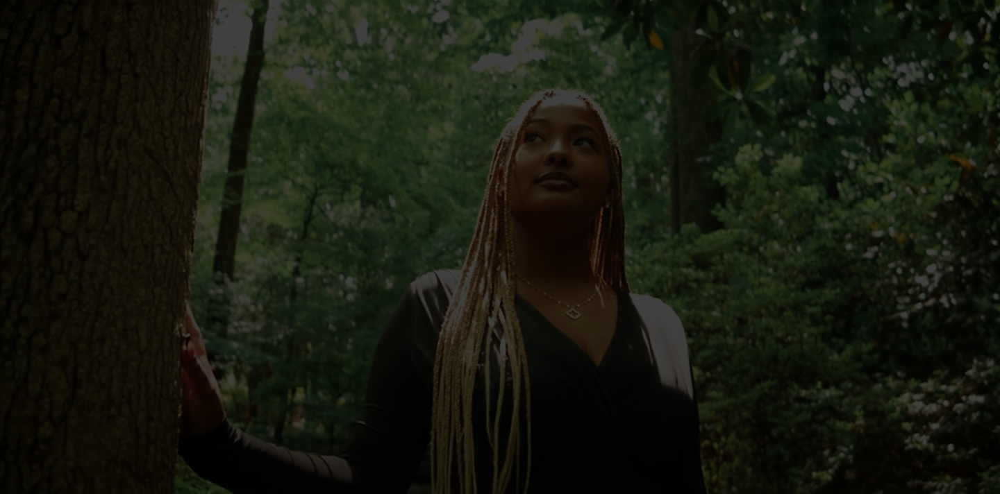
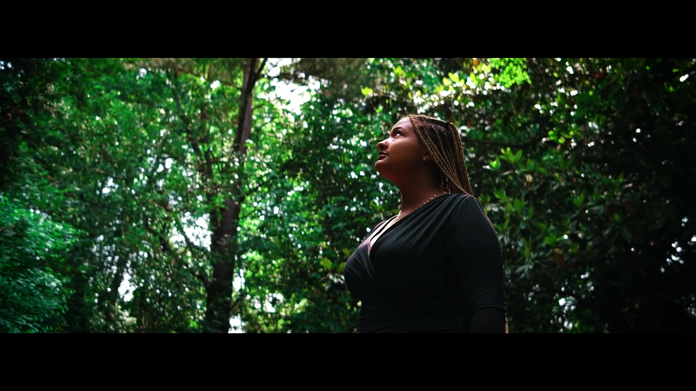
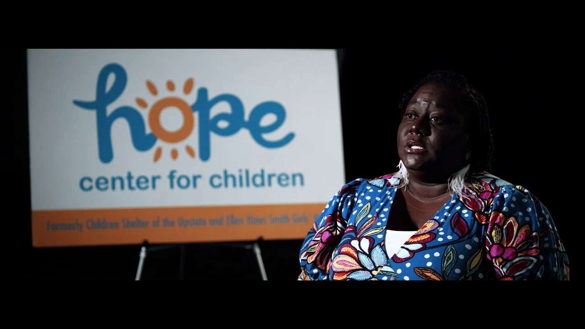
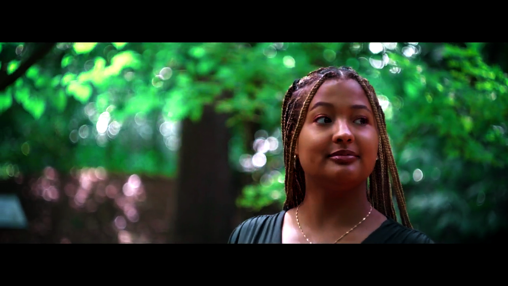
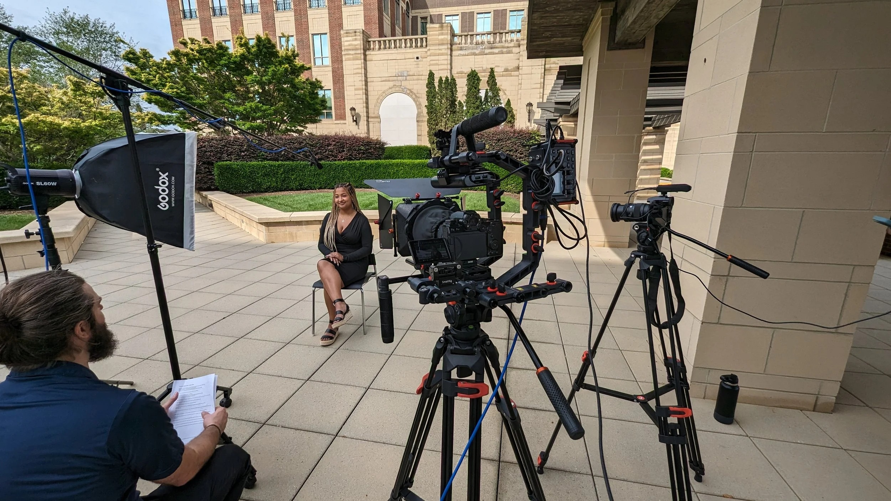
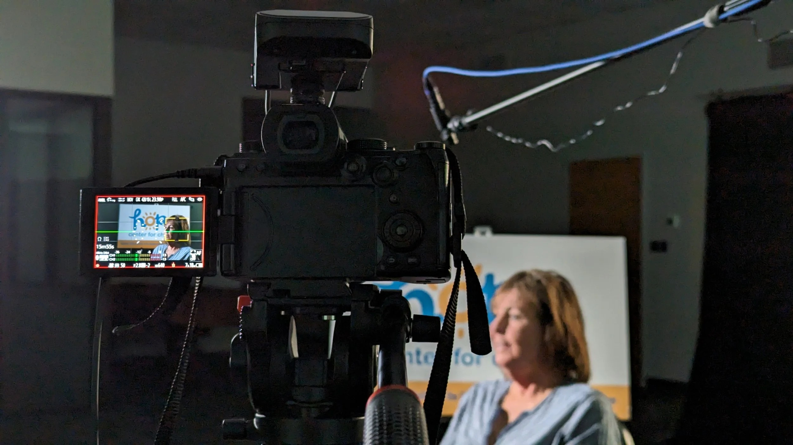

Nestled in the heart of Spartanburg, South Carolina, is a non-profit organization on a mission to be a sanctuary of hope, empowerment, and transformation. Through a groundbreaking documentary, we sought to unveil the untold story of the Hope Center, capturing the essence of their mission, the depth of their impact, and the resilience of their young beneficiaries.
The Challenge
We needed to create a documentary that captured the real impact of The Hope Center without exaggeration by showing the heart behind the mission and the people whose lives it changes every day.
The Solution
Rather than relying on dramatic techniques, we focused on authentic interviews, intentional cinematography, and thoughtful editing to create an emotional narrative. Every creative decision was made to amplify the voices of the Hope Center and the families they serve, allowing the mission to resonate naturally with viewers.
Visual Direction
We used dynamic lighting, shallow depth of field, and intentional composition to bring focus to real moments and emotions, thus creating a visual style that feels grounded to the message of The Hope Center itself.



The Face of Hope
Our documentary let us highlight both the success of the Hope Center and the resilience of this individual. Her journey, marked by struggle and pain, shows the impact of the care and support the HCFC offers.

Scalable Motion
Rather than reinventing the Hope Center’s identity, I expanded upon the warmth already present in its handwritten logo. That visual language became the foundation for a cohesive motion system, including animated logo reveals and reusable lower-third templates. Designed to be both authentic and practical, the assets empowered the Hope Center’s internal team to create future content while maintaining a consistent, recognizable brand long after production wrapped.

More Work
More projects in Film, Motion, and Video Production.